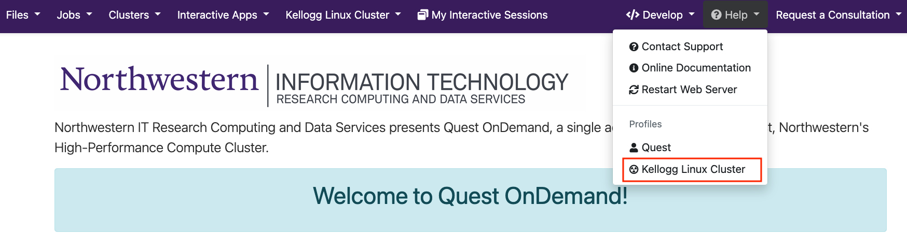
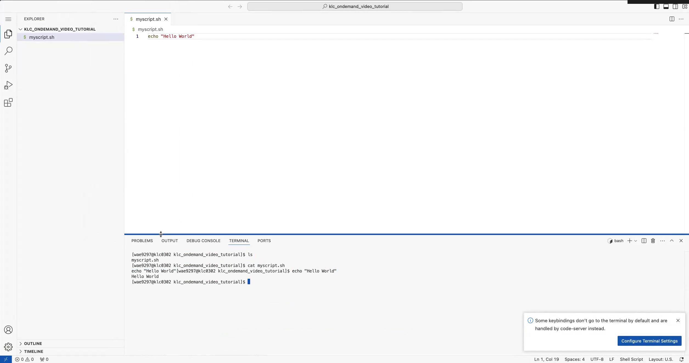

KLC OnDemand#
KLC OnDemand is a browser-based interface for the Kellogg Linux Cluster, accessible through Quest OnDemand and built on the Open OnDemand platform. It lets you launch graphical applications, development environments, and a file manager directly in your browser — no SSH client or local software installation required.
Getting Started#
Navigate to Quest OnDemand and log in with your Northwestern NetID. From the top navigation bar, select Help → Kellogg Linux Cluster.

This switches the interface to a curated KLC-specific view. See the Quest OnDemand documentation for more on the underlying platform.

The landing page shows two live resource tables:
KLC Direct Access Resource Availability — current available CPU cores and RAM on each KLC node. Use this to choose the most underutilized node when launching an app.
KLC Slurm Node Availability — current availability of the Kellogg GPU nodes (A100, L40S, H100).
Available Applications#
Scroll down on the landing page to see the pinned apps available for KLC.

App |
Category |
Best For |
|---|---|---|
KLC GNOME Desktop |
Desktop |
Running graphical applications such as MATLAB, Stata, or SAS |
KLC Jupyter |
Server |
Notebook-based interactive analysis |
KLC RStudio Server |
Server |
R analysis in the browser |
KLC VS Code Server |
Server |
Code editing, terminal access, and script development |
Launching KLC VS Code Server#
Click KLC VS Code Server from the landing page. You will see a configuration form with three settings:

Cluster (KLC Node) — Select which KLC node to run on. Refer to the resource availability table on the landing page and choose a node with available CPU cores and RAM for your workload.
Wall Clock Time — How long you want the session to remain active, in hours. Unlike SLURM batch jobs, there is no enforced maximum on KLC direct-access nodes, so you can enter any value (e.g.,
48for a two-day session).Working Directory (optional) — The folder VS Code will open on launch. Leave blank to start from your home directory. To open a specific Kellogg project directory, enter the full path here (e.g.,
/kellogg/proj/your-netid/my-project).
Click Launch. You will be taken to the My Interactive Sessions page where the session status shows as Starting.

The session typically takes one to two minutes to start. When it is ready, a Connect to VS Code button will appear. Click it to open VS Code in your browser.
Note
On first launch, VS Code will ask whether you trust the authors of the files in the working directory. Click Yes, I trust the authors to enable full editing and terminal functionality.
VS Code Server behaves nearly identically to the VS Code Remote SSH workflow — you get the same editor, terminal, and file explorer, all running directly on the KLC node.

The integrated terminal is a shell session on the KLC node you selected. You can run scripts, load modules, activate conda environments, and use all the same commands you would in an SSH session.
File Manager#
The Files menu in the top navigation bar opens a browser-based file manager for your KLC storage.

The left sidebar provides quick links to your most common locations:
Home Directory — your 80 GB personal home directory
Scratch 30 days — temporary scratch storage
Kellogg Directory — Kellogg Project Directories can be found here
From the file manager you can:
Browse — navigate to any directory you have access to, including Kellogg project directories
View / Edit — open and edit text files directly in the browser without launching a full IDE
Upload / Download — transfer files between your local machine and KLC using the buttons in the top-right toolbar
New File / New Directory — create files and folders
Copy/Move / Delete — manage files in place
Open in Terminal — open a shell session in the current directory
Note
The file manager upload and download buttons work well for files up to approximately 1 GB. For larger transfers, use Globus or scp/rsync.
Managing Sessions#
All running and queued sessions are listed under My Interactive Sessions in the top navigation bar. From there you can monitor session status, reconnect to a running session, or cancel a session you no longer need.
Sessions end automatically when the wall clock time you set expires. If you finish early, cancel the session from My Interactive Sessions to free up resources on the node for other users.